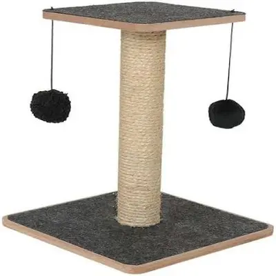

Arranhador para Gatos
Detalhes do Produto
- Marca
- ScratchCat
- Material
- Sisal natural e MDF
- Indicação
- Gatos de todos os portes
- Dimensões
- 60cm de altura x 30cm de base
- Características
-
- Base estável e resistente
- Corda de sisal natural
- Protege móveis e cortinas
- Mantém unhas saudáveis
- Inclui brinquedo suspenso
- Peso Máximo Suportado
- 15kg
- Preço
- R$ 79,90
Descrição
Arranhador ideal para gatos afiarem suas unhas de forma natural e saudável. Fabricado com sisal de alta qualidade e base em MDF resistente. Protege seus móveis e proporciona diversão com o brinquedo suspenso incluso.